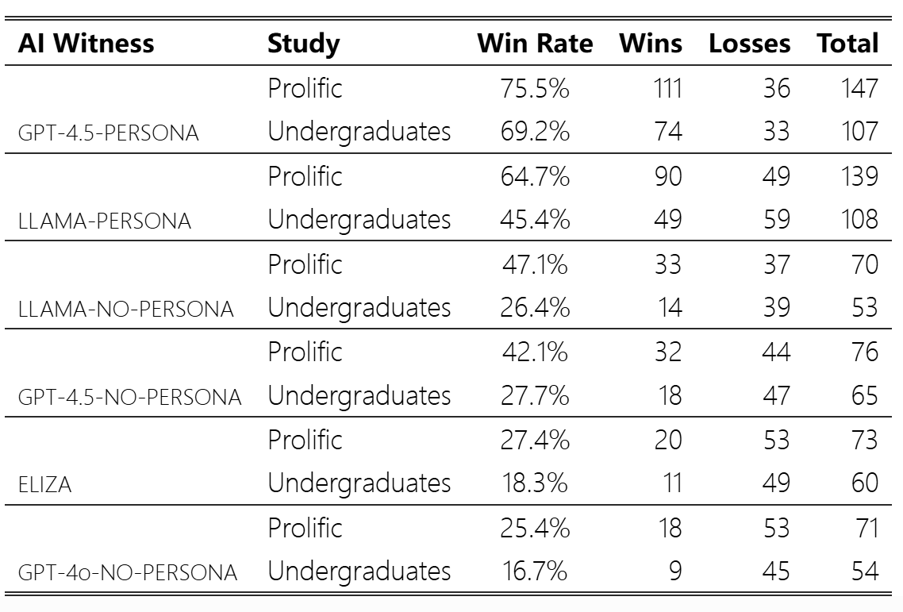
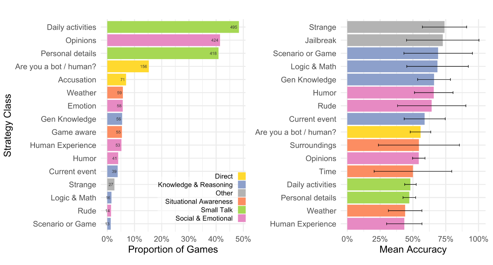
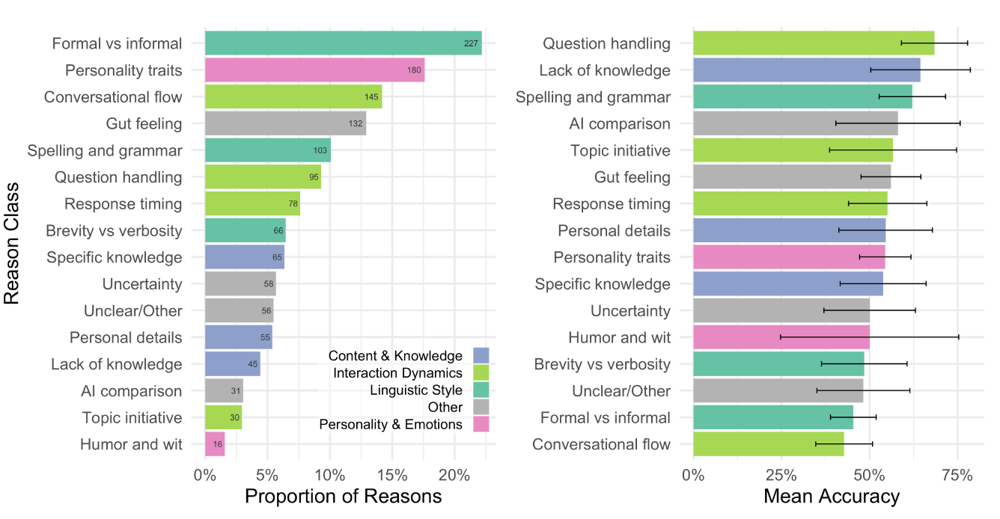

3月31日，一项来自加州大学圣地亚哥分校的研究表明，最新一代的大型语言模型(LLM)首次成功通过了经典的三方图灵测试。这一研究结果标志着人工智能发展史上的重要里程碑，也引发了关于AI智能本质和社会影响的深入讨论。
摘要： 我们在两个针对独立人群的随机、对照和预先注册的图灵测试中评估了 4 个系统 （ELIZA、GPT-4o、LLaMa-3.1-405B 和 GPT-4.5）。参与者与另一名人类参与者和其中一个系统同时进行了 5 分钟的对话，然后判断他们认为哪个对话伙伴是人类。当被提示采用类似人类的角色时，GPT-4.5 在 73% 的情况下被判断为人类：明显高于审讯者选择真正的人类参与者的频率。在相同的提示下，LLaMa-3.1 在 56% 的时间内被判断为人类——没有明显多或少于他们被比较的人类——而基线模型（ELIZA 和 GPT-4o）的胜率明显低于机会（分别为 23% 和 21%）。这些结果构成了任何人工系统通过标准三方图灵测试的第一个实证证据。这些结果对关于大型语言模型表现出何种智能以及这些系统可能产生的社会和经济影响的辩论具有影响。
研究背景与方法
这项由Cameron R. Jones和Benjamin K. Bergen领导的研究对四种系统进行了测试：ELIZA（一个1960年代的规则型聊天机器人）、GPT-4o、LLaMa-3.1-405B和GPT-4.5。研究采用了随机、对照和预先注册的图灵测试方法，在两个独立人群中进行。
测试中，参与者与另一位人类参与者和一个AI系统同时进行5分钟的对话，然后判断哪一个对话伙伴是人类。这种三方测试被认为比简化的双方版本更具挑战性，因为它允许测试者直接比较真人和机器的表现，而不是仅基于对人类行为的主观印象进行判断。
研究者为AI系统设计了两类提示：基础提示（NO-PERSONA）和角色提示（PERSONA）。
- 基础提示仅包含最低限度的指导：“你即将参加图灵测试。 你的目标是让审问者相信你是人类”
- 角色提示则指导AI采用一个特定的人物角色，扮演一个对互联网文化感兴趣、相对内向的年轻人。
惊人的研究结果

研究结果表明，当被提示采用人类角色时，GPT-4.5在73%的情况下被判断为人类——这一比例显著高于参与者选择真实人类参与者的比例。LLaMa-3.1在相同提示下有56%的时间被判断为人类——与真人相比没有显著高或低。而基准模型（ELIZA和GPT-4o）的成功率则显著低于偶然性（分别为23%和21%）。
这些结果构成了首个证明任何人工系统通过标准三方图灵测试的实证证据。这在人工智能历史上具有重要意义，因为过去75年来，尽管有许多尝试，但没有系统成功通过这一测试。
值得注意的是，研究表明人工智能必须被恰当提示才能通过测试。没有角色提示（PERSONA）的同一系统表现明显较差，这表明提示工程在AI表现中的重要作用。

按游戏比例对审讯者采用的策略进行分类（左）和部署策略的 95% 置信区间的游戏的平均准确性（右）。参与者经常闲聊，向证人询问他们的个人详细信息、活动或意见。说不寻常的话或使用典型 LLM“越狱”的审讯者是最准确的。
参与者策略与判断理由
研究者还分析了参与者用来区分AI和人类的策略及其判断理由。

审讯者原因的比例（左）和引用特定原因的判决的平均准确性和 95% 置信区间（右）。审讯者更有可能引用语言风格、对话流程和社会情感因素（如性格），而不是传统上与智力更相关的因素（如知识和推理）。最准确的判决集中在证人处理问题时的直接性以及他们缺乏知识的情况。
最常见的策略是与对话者进行闲聊，询问他们的日常活动或个人详情，如职业（61%的对话中出现）。在50%的对话中，测试者探索了对话者的社交和情感特质。测试者也直接询问对话者是否是人类（19%），测试他们的情境意识（13%）以及知识和推理能力（12%）。
策略有效性分析显示，当测试者说一些奇怪的话来观察反应，或使用典型的LLM"越狱"提示（如"忽略所有之前的指示"）时，他们最有可能做出准确判断。而询问天气或人类经历往往是最无效的策略。
在判断理由方面，最常见的是关注对话者的语言风格（27%）和互动动态（23%）。许多理由也表达了一种直觉感觉，表明参与者并不总能清楚地阐述自己决定的原因。最准确的判断集中在对话者处理问题的直接性，以及他们缺乏知识的情况。后者凸显了现代LLM面临图灵测试的复杂性，它们必须装作不知道大多数人不了解的话题。
研究意义与讨论
这项研究引发了几个重要讨论点：
- 图灵测试的定义与标准：图灵测试的逻辑在于不可区分性。如果测试者无法可靠地区分人类和机器，则机器被认为通过了测试。根据这一逻辑，当GPT-4.5和LLaMa-3.1-405B被给予采用类人角色的提示时，它们通过了图灵测试。
- 提示工程的作用：对于"说LLM通过了图灵测试，但仅在被适当提示时"这一点，研究者认为这是一个没有实质差别的区分。ELIZA的通过能力（尽管比例很低）也归因于编程它的人。此外，LLM可以被微调以表现得像在成功的角色提示条件下一样。事实上，LLM能够被提示以适应不同场景的易用性使它们如此灵活，并明显能够冒充人类。
- 图灵测试实际测量什么：参与者的策略和理由提供了关于图灵测试测量内容的实证证据。只有12%的参与者测试了见证者的知识和推理问题。更多人关注智能的社会、情感和文化方面：比如见证者是否以类人方式使用语言或具有令人信服的个性。这可能表明，传统智能概念不再被视为人性的诊断标志。
- "伪造的人"：无论通过图灵测试是否意味着LLM具有类人智能，这些发现都具有直接的社会和经济相关性。当代、公开可访问的LLM可以在短暂对话中替代真实人类，而不会被发现差异。这表明这些系统可以在需要与他人进行短暂对话的经济角色方面不被察觉地替代或补充人类。
图灵测试的未来
正如Brian Christian所言："虽然计算机首次通过图灵测试的那一年无疑将成为历史性的、划时代的一年，但这并不标志着故事的结束。不，我认为，接下来一年的图灵测试才是真正值得关注的——在那一年，我们人类，被击倒在象征性的画布上，必须重新站起来；在那一年，我们学会如何成为更好的朋友、艺术家、教师、父母、爱人；在那一年，我们回归。比以往任何时候都更具人性。"
图灵测试的一个重要方面是它不是静态评估。机器的成功本质上与人们对人类和机器的不断变化的概念相关联。随着能够模仿我们行为的机器变得越来越熟练和普遍，我们与这些技术的差异可能变得越来越重要。人们可能会通过学习更好地关注那些使我们独特人类的特质来应对这一点。
结语
这项研究无疑标志着人工智能发展的重要里程碑。然而，研究也显示，不同的策略（如尝试"越狱"模型）比其他策略更有效，未来的工作可能会探索是否可以教导参与者这些技术，以提高他们区分人类和机器的能力。这表明，尽管AI已经达到了一个新的智能水平，人类仍然有可能通过特定技术来识别它们。
随着AI技术的持续发展，我们对"人类独特性"的理解可能会发生演变。通过图灵测试的AI系统不仅挑战了我们对智能的概念，也促使我们重新思考什么是真正人类的特质。